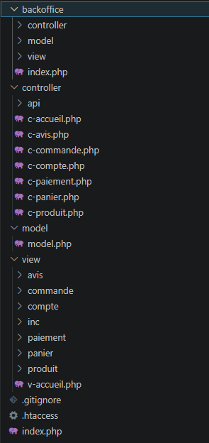
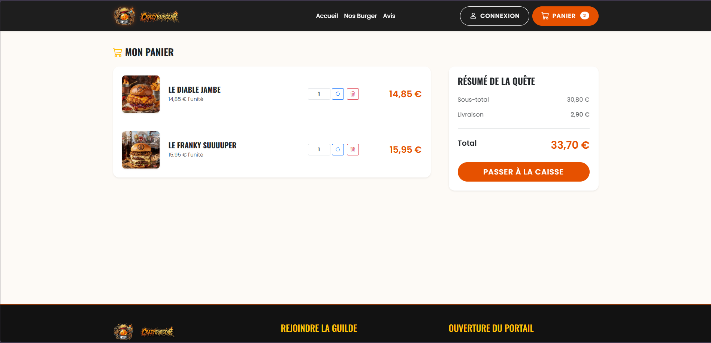
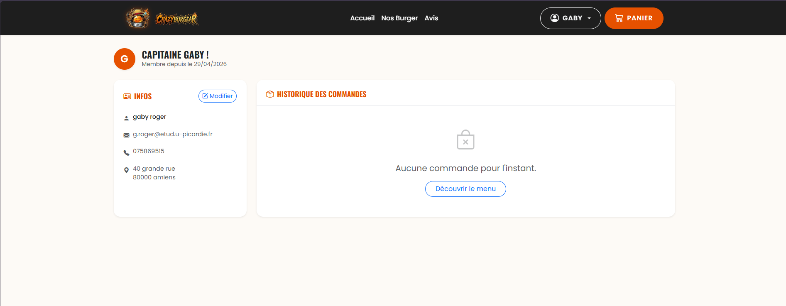

01 La Genèse de l'Histoire
Réalisé lors de mon 4ème semestre en BUT Informatique (module R4-1), Crazy Burgear répondait à un cahier des charges exigeant : développer un site e-commerce de A à Z en respectant des contraintes d'architecture logicielle strictes.
Pour rendre le défi technique plus captivant, j'ai imaginé un fast-food conceptuel proposant des burgers inspirés des univers d'animes cultes (One Piece, Naruto, SNK, Demon Slayer...). Derrière le fun de commander un "Chapeau de Paille" ou un "Kamehameha", se cache une véritable machinerie de traitement de données.

02 Architecture MVC & Base de données
Le véritable cœur du projet réside dans son code. L'application a été entièrement construite sur une architecture Modèle-Vue-Contrôleur (MVC) "from scratch" en PHP, séparant distinctement la logique métier, l'accès aux données et l'affichage.
- Routage personnalisé : Un système de routeur gérant les requêtes HTTP (GET/POST) pour distribuer les actions aux bons contrôleurs.
- Sécurité absolue : Hashage des mots de passe, requêtes SQL systématiquement préparées contre les injections, et gestion sécurisée des sessions utilisateurs.

03 Les Fonctionnalités Clés

Catalogue & Filtres dynamiques
Affichage des burgers (Assaut bestial, Chidori...) filtrables par univers d'animes grâce à des requêtes SQL dynamiques croisant plusieurs tables.

Tunnel de Commande
Système de panier géré en session PHP, permettant l'ajout, la modification des quantités, et la validation via une simulation de paiement.

Espace Client Personnalisé
Inscription, connexion, modification des données personnelles et suivi de l'historique et du statut des commandes passées.

Back-Office Administrateur
Interface de gestion sécurisée (CRUD) réservée au staff pour ajouter de nouveaux produits, gérer le stock, et faire évoluer les statuts de préparation des commandes.
04 Les Obstacles Surmontés et le Lien avec mon BUT
Le passage d'un code PHP procédural "classique" à une architecture MVC stricte a été le défi majeur de ce projet. Il a fallu penser l'application en objets, gérer proprement les espaces de noms et concevoir une base de données MySQL parfaitement normalisée pour relier les clients, les commandes, les lignes de commandes et les produits.
Compétences validées
- Réaliser : Développer une application informatique complexe en respectant un patron de conception (Design Pattern MVC).
- Optimiser : Sécuriser l'application face aux failles courantes (XSS, SQLi, CSRF) et structurer les données.
- Administrer : Création d'une interface back-office pour la gestion des flux de l'entreprise.